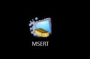
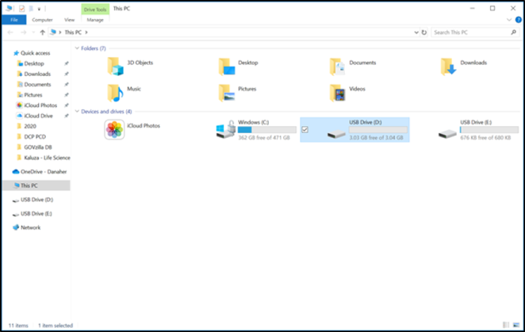

This work instruction shows how to scan for malware on USB drives that are used on Beckman Coulter instruments and products. This is required to run a virus/malware detection tool on any USB drive that is used on any Beckman Coulter instrument or product. The following instructions are to be performed BEFORE and AFTER any USB drive use on a Beckman Coulter instrument or product.
Go to
https://docs.microsoft.com/en-us/windows/security/threat-protection/intelligence/safety-scanner-download and download the Microsoft Safety Scanner onto your company issued laptop. Select the appropriate 32-bit or 64-bit version according to the operating system. The file you are downloading is MSERT.exe. Download this file to your Downloads folder. This can be found at “User\*\Downloads\”. You will need to self-execute this file. It will not be installed automatically onto your desktop or in program files.
| Concept of Practice
|
| It is recommended to download a fresh copy any time the tool is needed to ensure the most current updates to the program are present.
|

-
Insert the USB drive that you are using into your laptop.
Note: The drive letter that is assigned to your USB drive by opening This PC in File Explorer. This displays the drive letter assigned to your USB drive. In this example, the drive letter assigned is drive letter D.

-
Double-click
MSERT.
Click the check box to accept all terms of the preceding license agreement.
-
Click
NEXT.
The Welcome to the Microsoft Safety Scanner window is displayed.
-
Click
NEXT.
-
Select
Customized scan.
-
Click
Choose Folder.
-
Select the drive letter that your USB drive is assigned and click
OK. In this example, the USB drive is assigned drive letter D.
-
Click
Next to start the scan. Note that even though you have selected the USB drive, a quick scan of the C drive also occurs.
Wait for the scan to complete. A progress bar and timer display. The tool indicates whether viruses are found.
-
If no viruses are found, click
Finish. You may use the USB drive.
-
If viruses or malware are found, and this scan was performed on a Beckman Coulter product, click
View detailed results of the scan.
-
Click the entry of the viruses or malware found and take a screenshot of this screen, as well as the details on each virus.
-
Double-click
This PC icon on the desktop to open it.
-
Navigate to
C:\Windows\debug to locate the MSERT log file.
-
Email the MSERT log file along with the screen shots from step 11 to
ProductSecurity@beckman.com.
-
Repeat steps 2 through 14 after each time you use the USB drive on an instrument or product. If malware or a virus is detected on the USB drive after your use with a BEC instrument or product, follow the applicable procedure to remove them from the affected product.